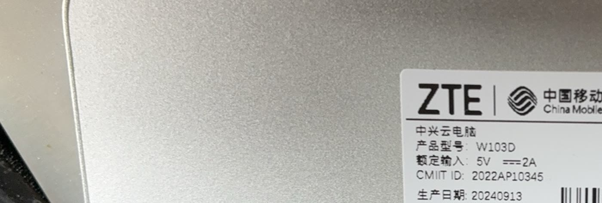

实操W103DFT-7102026-10-11
125 元的盒子
——把 FT-710 变成随时能用的远程电台
电台被绑在书桌上，是因为它的"面板"是一台电脑。这篇文章记录一条完整的路： 想要什么 → 一台远程电台服务端到底需要什么 → 与树莓派/小主机逐项对比 → 为什么是一台二手云电脑盒子 → 真机上把六个缺陷一个个摁掉（含一场从 4% 音频 覆盖率挖到根因的排查）→ 以及这 125 元最后买到了什么。
1. 想法：电台不该被绑在书桌上
一台 FT-710 摆在书桌上，它本体什么都不缺：CAT、USB 声卡、真实频谱都在机身上， 插一根 USB 线全给你。缺的是你在别处的时候，怎么用上它—— 在沙发上想听一会儿 40 米、在阳台上想调一下天线、出差在外想确认频率有没有被谁占了。
第一反应是远程桌面 / VNC。我们认真试过，然后放弃了，理由都很具体：
- 声音会走一条很长的路：电台 → USB 声卡 → 电脑 → 远程桌面的音频通道 → 你耳朵。多一层重采样、多一层缓冲，延迟与断续都会被放大。
- 手机上的远程桌面不是"面板"：你要的是几个旋钮和一条瀑布，不是一块被缩小的 桌面；瀑布图在远程桌面上是"视频"，帧率与码率都不划算。
- 它需要一台常开的电脑：为了听电台而让一台 x86 主机 7×24 转着， 电费与散热都不对。
真正想要的形态是反过来的：服务端守在电台旁边，浏览器只是面板。 手机、平板、笔记本随便哪一台，打开一个网址就是一台能听、能看瀑布、能按 PTT 的电台。 这台服务端要：接住电台的 USB（串口 + 声卡 + 频谱）、编码音频、把状态推给浏览器、 常年通电而不吵不热。
2. 调研：这台服务端到底需要什么
先量化需求，再挑硬件。服务端是 Python（有 GIL），热路径基本跑在一个核上， 所以核心数帮不上忙，真正决定成败的是单线程性能。逐项列出来：
| 真正决定成败的 | 为什么 |
|---|---|
| 单线程性能 | Python 服务端、音频编码、频谱解析都在一个事件循环里；多核只帮到别的进程 |
| USB 口 ≥ 2 | 电台线一根；另一根留给天调、U 盘或键盘。这是最常见的翻车点 |
| 有线网口 | 每路客户端约 60 KB/s，百兆都富余；但 WiFi 抖动会直接变成音频断续 |
| 7×24 的功耗与散热 | 它要常年通电、放在电台旁边，风扇声与电费都算成本 |
| 价格与可得性 | 上面四条达标之后，这一条才是真正的决定因素 |
然后把这些候选的 CPU 拿去查实测单线程分（PassMark，单一来源、同一天抓取， 样本数一并列出——样本数少于 100 的那几行只能当参考）：
| 处理器 | 单线程 | TDP | 样本数 | 服务端热路径 ≈ |
|---|---|---|---|---|
| Intel N100 | 1879 | 6 W | 4111 | ~8% |
| AMD R1505G（HP t640） | 1822 | 15 W | 138 | ~8% |
| Broadcom BCM2712（树莓派 5） | 1813 | — | ⚠️ 4 | ~8% |
| Intel Celeron J1900 | 653 | 10 W | 881 | ~22% |
| Intel Atom D525 | 293 | 13 W | 336 | ~49% |
结论有点反直觉但很实用：算力几乎不是选型依据。从 2008 年的 Core 2 Duo 到今天的 N100，任何一台单线程能跑到 700 分以上的机器，都只占一个核的 15–45%；而 2 GB 内存、几百 MB 存储就够。 真正把项目卡住的从来不是 CPU，而是 USB 口数、网口、功耗，以及"这东西好不好买、好不好装"。
3. 对比：四条路，各自的真实代价
| 方案 | 好在哪里 | 代价 |
|---|---|---|
| N100 小主机（新） | 单线程最高、6 W、四核、有保修，唯一"不用算余量"的一档 | 价格最高（新机整机通常 500 元以上，还要配存储与电源） |
| 二手瘦客户机（HP t640 / Dell Wyse 一类） | 单线程与 N100 打平（1822 vs 1879）、15 W、企业淘汰量大、便宜 | 要挑型号：确认 USB 口数、存储形态、能否装 Linux；货源与成色看运气 |
| 树莓派 4 / 5 | 官方镜像、生态最厚、教程最多，几乎零移植 | 涨价与缺货；要另配电源/散热/存储；加上配件通常 400 元起 |
| 运营商盒子（ZTE W103D） | 125 元二手价、<5 W、32 GB eMMC、自带两个 USB 与有线口 | 要自己刷系统：专属内核，不能升；100M 网口；WiFi 依赖社区驱动 |
注意最后一行和前三条的区别：前三者是"买来就能装"，它是"买来还要把系统换成我们自己的"。 我们这边正好有 MRRC Modern 的服务端镜像，这件事才成立——这也是这篇文章里最花时间的部分。
4. 为什么是这台 125 元的盒子
先把话说清楚：它原本不是给火腿用的设备。它是一台运营商发的"云电脑终端"—— 中国移动/ZTE 的 W103D，出厂是安卓，用途是插上显示器当瘦客户端跑云端桌面。 我买它花了 125 元（二手），买它的理由很朴素：上面第 2 节的四条件，它全过。



| ZTE W103D | 树莓派 4 | 树莓派 5 | |
|---|---|---|---|
| SoC | S905L3A · 4×A53（顺序核） | BCM2711 · 4×A72（乱序） | BCM2712 · 4×A76（乱序） |
| 内存 / 存储 | 2 GB / 32 GB eMMC | 1–8 GB / microSD | 4–8 GB / microSD·NVMe |
| 网口 | 100 Mb | 千兆 | 千兆 |
| 功耗 | < 5 W | ~3–7 W | ~5–12 W |
| 软件成熟度 | 专属内核，不能升 | 官方镜像，生态最厚 | 同左 |
s905l3a-w103d 变体，内核 6.18）。
换句话说：省下的钱，是用"自己动手"换的。愿意动手，这就是全场最便宜的方案。
5. 动手：从开箱到手机上的瀑布图
整条路五步，全部只用一根网线、一个 U 盘、一台能 SSH 的电脑：

① 写 U 盘
把镜像写到 U 盘（认准盘符，别烧错盘），插到盒子上：

② 从 U 盘启动（安卓一字节不动）
盒子通电，在安卓里执行一次 reboot update，它就从 U 盘启动。
这一步只改一次 u-boot 的启动顺序，不碰安卓的分区与数据——
拔掉 U 盘重新上电，它还是原来那台安卓盒子。这是整个方案里我最喜欢的设计：
失败不用负责，因为什么都没动。

③ 接电台
FT-710 用上方那个 Enhanced 口接盒子，一根线一次给出三样东西：
CAT 串口（/dev/ttyUSB0）、USB 声卡、以及真频谱用的 FT4222 接口。
用自带的命令切换机型：
ssh root@<盒子IP>
mrrc-radio use ft710 # 自动探测串口 → 写配置 → 重启服务
④ 手机上就是一台电台

6. 能开机 ≠ 能用：真机拓出来的六个坑
镜像在容器里"构建成功、验收全绿"，第一次真的烧进盒子、插上电台，还是一晚上拓出六处缺陷。 每一处都只在这套硬件上才会露头——这也是为什么我不相信"构建成功"这四个字。
| 症状 | 根因 |
|---|---|
| 网页打不开，服务每 3 秒重启一次 | 首启以 root 生成 TLS 证书，私钥是 0600 root:root，而服务跑在 mrrc 用户下 ⇒ uvicorn 读不了私钥 |
| 真实频谱起不来（但 CAT 与声音都正常） | FT4222 没有自己的 /dev 节点，库直接开 USB 设备，而节点是 root:root ⇒ 缺一条 udev 规则。半个故障最难判 |
| HDMI 上看不到首启横幅（上面有口令） | 单元里写了 StandardOutput=console——这不是合法的 systemd 语法，systemd 只是默默忽略它 |
| 盒子里的配置带着构建机的串口 | 安装脚本在构建主机上写的配置文件被原样搬进镜像（那台上是我 Mac 的 /dev/cu.SLAB_USBtoUART） |
| 新盒子上总有一颗红灯 | Debian 自带的 dnsmasq.service 与 systemd-resolved 抢 53 端口（热点用的是 NetworkManager 自带实例） |
| 验收脚本说一个正在运行的单元"未安装" | systemctl list-unit-files | grep -q 在 pipefail 下因 SIGPIPE 返回 141：grep 命中即退出，systemctl 收到 SIGPIPE，"找到了"被判成"没找到" |
音频那一仗（值得单独说）
电台接上之后，浏览器里的声音卡顿得厉害：先是碎，后来干脆没有。 第一反应是网络、是浏览器、是发射干扰——全错。用服务自己的音频代码在服务外做对照实验， 数据是这样的：
| 读法 | 实际拿到的音频 |
|---|---|
| 服务原样（20 ms 一个周期） | 4%，并且约 60 秒后永久停摆 |
| 同一份代码，读得激进一点 | 100% |
| 同一份代码，把缓冲加大到 400 ms | 99.7% |
| 修好后（缓冲 100 ms） | 100%，50 帧/秒、帧间隔 20 ms，连续稳定 |
根因是这台盒子的宿主音频缓冲只有一两个 20 ms 周期：读得稍慢就溢出， 而溢出之后——最容易骗人的地方——采集接口静默停摆：系统层面显示"停止"， 但音频库仍然报告"流是打开的"，不抛异常，日志里一个字都没有。 macOS 与 Windows 的驱动层缓冲大得多，所以同一份代码在台式机上永远看不见这个坑。
修法两条：把采集缓冲按平台调到 100 ms（MRRC_RX_BUFFER_MS），
再加一个静默看门狗——有人在听却连续 3 秒读不到音频，就打日志并重开采集流。
前者让问题不再发生，后者让它下次发生时看得见、并且自愈。
7. 值不值：125 元买到了什么
| 买到的 | 说明 |
|---|---|
| 任何设备都是电台面板 | 手机、平板、笔记本（连同型号的 Android 客户端）打开一个网址就能听、看真频谱、按 PTT；服务端守在电台旁边，不占书桌 |
| 成本 | 盒子 125 元 + 一个 U 盘（本来就有）；对比：树莓派方案加上电源/散热/存储通常 400 元起，N100 小主机 500 元以上 |
| 常年开着的代价 | < 5 W，一年电费不到 30 元；被动散热，没有风扇声 |
| 还能顺手干别的 | 同一台上跑天调控制（ATR-1000）、通联录音、以及给朋友的只听口令入口 |
| 往外走一步 | 接上 Cloud Hub（出站隧道 + 每实例证书）之后，它就从"局域网里的电台"变成公网可达的电台：详见云端的第一公里 |
最实在的一条：电台回到了它该在的位置——书桌上那个位置只负责接天线和电源， 至于"谁在用它、从哪里用"，交给浏览器。家里谁想听一会儿短波，给个只听口令就行； 自己在外地，打开浏览器就是那台熟悉的 FT-710。

8. 边界与还没做的
- 真机上还没验的：从浏览器发射到电台的音频（需要现场对着话筒）、通联录音、 以及公网接入的现场验收。构建成功、局域网可用，都不等于这些成立。
-
依赖专属内核：这台盒子的 WiFi 依赖 Amlogic 的专属内核与固件，
升级内核请走
armbian-update并保持 w103d 变体；换通用内核 = 静默丢 WiFi。 - 100M 网口：一路客户端（真频谱约 150 kbps + Opus 音频）绰绰有余； 但要同时跑多路监听 + 录音，就要算一算。
- 它不是一个零售产品：这是我们自己在用的一台盒子。镜像、构建脚本、 这套排查记录都在仓库里，谁愿意动手都可以复刻；不愿意动手的话，第二、三节里的 N100 或树莓派才是你的选项。
写于 2026-10-11，就是这台盒子上线的那天。文中的数据全部来自当天的日志、提交与产物校验
（包括那六个缺陷各自的判定命令）。镜像可以从
下载页取，
逐步操作见 W103D 完整指南。
English: A ¥125 box as my FT-710's remote server